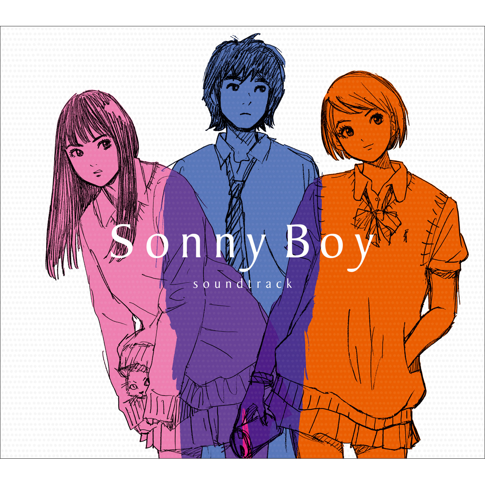

Day 84

Various ◆ Sonny Boy OST ◆ 2021
去年油管上发现的专辑。专辑的气氛很有趣，像是在一场充满失真和噪点的梦中。曲子风格多变，有离奇梦幻的，也有活泼轻快的，有闲适放松的，有正儿八经的。总体而言是一场不错的旅行，推荐一试。作为整体听的时候，出自不同作曲家，不同风格但又有某种相似主题的曲子一首接一首，感觉很棒。
作曲阵容强大，有銀杏BOYZ，落日飛車，VIDEOTAPEMUSIC，ザ・なつやすみバンド，ミツメ，Ogawa & Tokoro，空中泥棒，カネヨリマサル，toe，CONISCH。我只认识一个落日飛車，哈哈。之后有机会了解一下这些乐队，说不定有惊喜。
音乐这么棒，我都有点想看看动画了。中文是《漂流少年》，名字挺不错。看维基说是青春科幻群像剧，看油管评论说有点像 FLCL。说像 FLCL 让我有点犹豫。
PS 看了维基才发现，音乐顾问是渡邊信一郎，熟人啊。